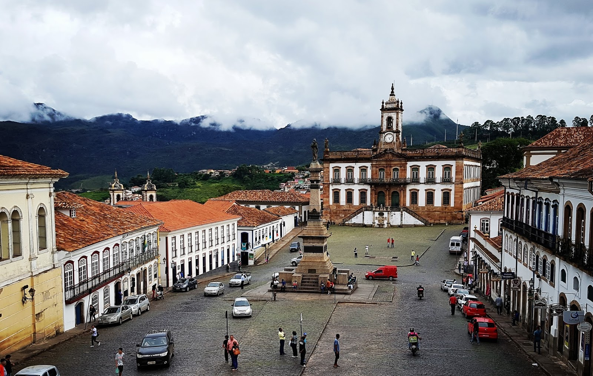

Ouro preto
Imagem da cidade de ouro preto
Localizada na região Central de Minas Gerais, a cidade de Ouro Preto reúne o maior e mais importante acervo da arquitetura e da arte do período colonial de todo o Brasil. Em meio ao casario dos séculos 17 e 18, construído nas ladeiras de uma região montanhosa, erguem-se 13 igrejas monumentais, com altares banhados a ouro e imagens sacras, nos estilos barroco e rococó. Pelo seu porte e conservação, Ouro Preto foi uma das primeiras cidades escolhidas no mundo para ser Patrimônio da Humanidade, em 1980, pela Organização das Nações Unidas para a Educação, a Ciência e a Cultura (Unesco).
Para a história do Brasil, Ouro Preto apresenta grande relevância como palco da Inconfidência Mineira, o principal movimento de contestação à metrópole portuguesa, ocorrido em 1789. A traição de um de seus integrantes levou a Coroa a descobrir a conspiração em Vila Rica, reprimindo-a duramente. Considerado o principal líder insurgente, o alferes Joaquim José da Silva Xavier, apelidado de Tiradentes, acabou enforcado e esquartejado no Rio de Janeiro, em 21 de abril de 1792.
O motivo imediato da revolta era a cobrança de impostos atrasados, o quinto sobre toda a extração de ouro, tributo estabelecido pelo governo português. Entre os rebeldes, havia um grupo de intelectuais bem informados sobre as idéias difundidas por ocasião da independência das 13 colônias inglesas na América do Norte (1776) e nos antecedentes da Revolução Francesa (1789). Entre seus planos, estavam a separação de Portugal e a fundação de uma república no Brasil. À memória do movimento, é dedicado o imponente Museu da Inconfidência.